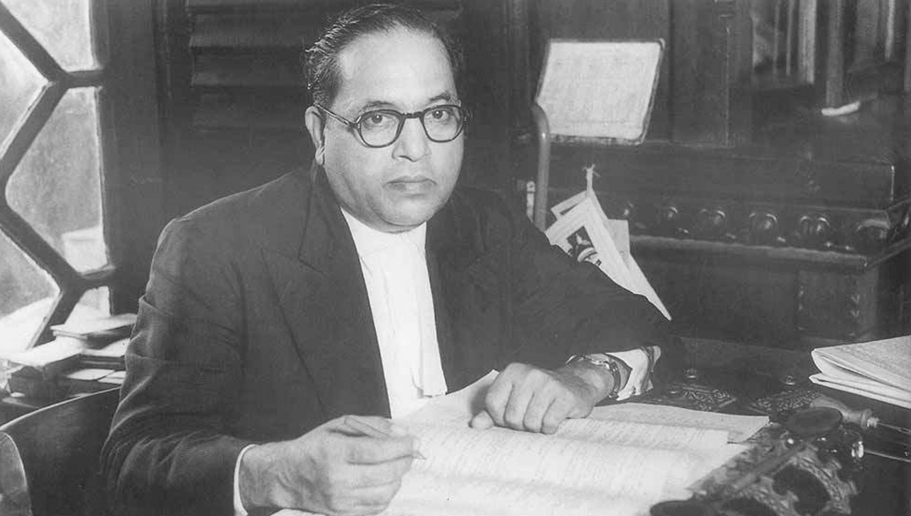

Dr. Ambedkar
Father of Indian Constitution

Dr. Bhimrao Ramji Ambedkar, popularly known as Babasaheb Ambedkar, was a jurist, social reformer and politician.
Here is the timeline of Dr. Ambedkar's life:
Birth, 14th April 1891
Witness in South Barrow Commission, 1917
Untouchables' conference, Nagpur, 1918
Bahishkrit Hitkarini Sabha Formed 20th July 1924
Nominated as MLC, Bombay Province, 1926
Mahad Satyagraha, December 1927
Witness in Simon Commission, May 1928
Nashik Kala Ram temple Satyagraha, 2nd March 1930
Representative at Round Table Conference, 1930-32
British Communal Award, 20th August 1932
Poona Pact, 20th September 1932
Yewale District, Nasik Conference, 23rd October 1935
Mahar Parishad, Bombay Province, 31st May 1936
Independent Labout Party Formed , August 1936
Elected MLA, Bombay Province, January 1937
All India Scheduled Caste Federation Formed at Nagpur, April 1942
Appointed as Labour Minister in the Viceroy's Executive Council, July 1942
People's Education Society Formed, July 1945
Elected to Constituent Assembly from Bengal, November 1946
Law Minister in Independent India, 15th August 1947
Appointed as Chairman, Drafting Committee of the Constitution of India, 29th August 1947
Resigned from Union Cabinet, September 1951
Elected to Rajya Sabha, March 1952
Buddhist Society of India Formed, May 1955
Read more about this on
Wikipedia